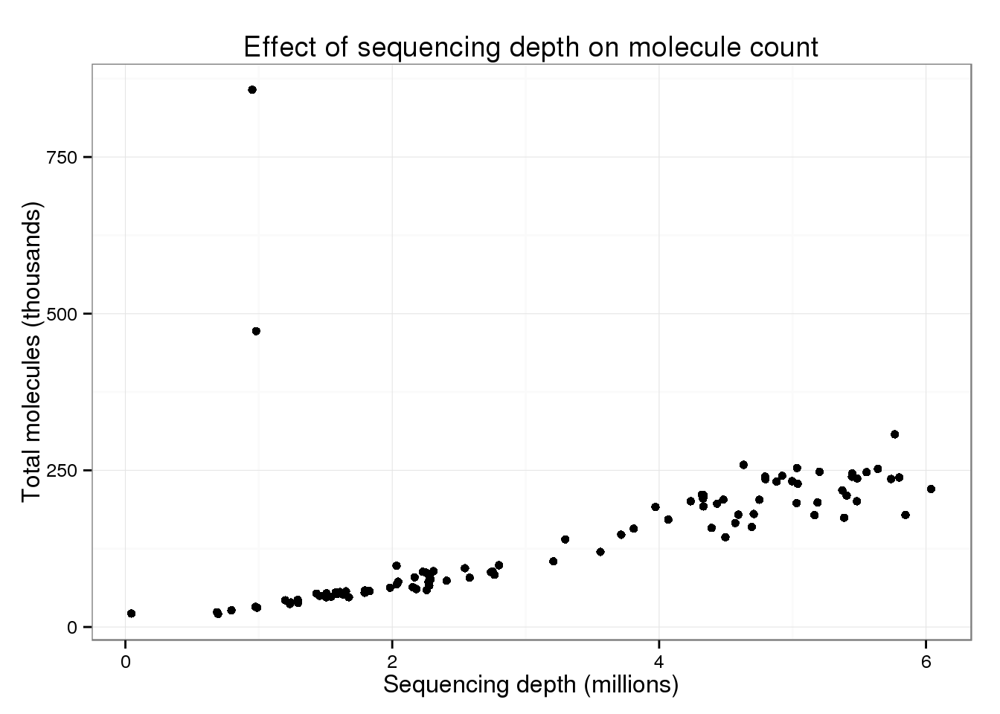
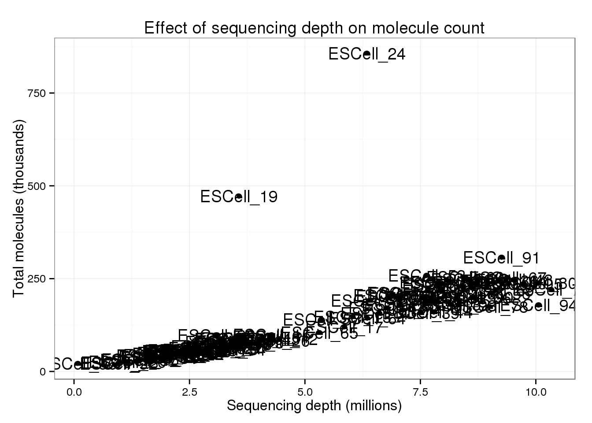
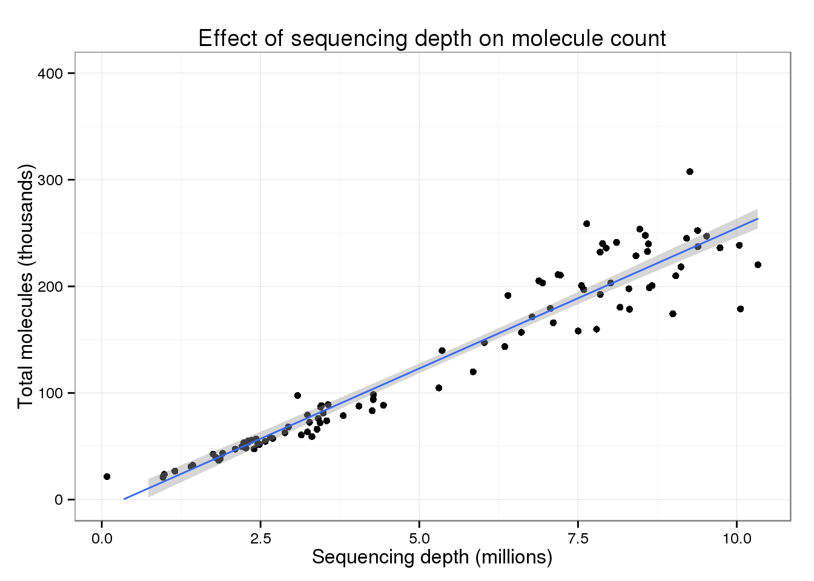
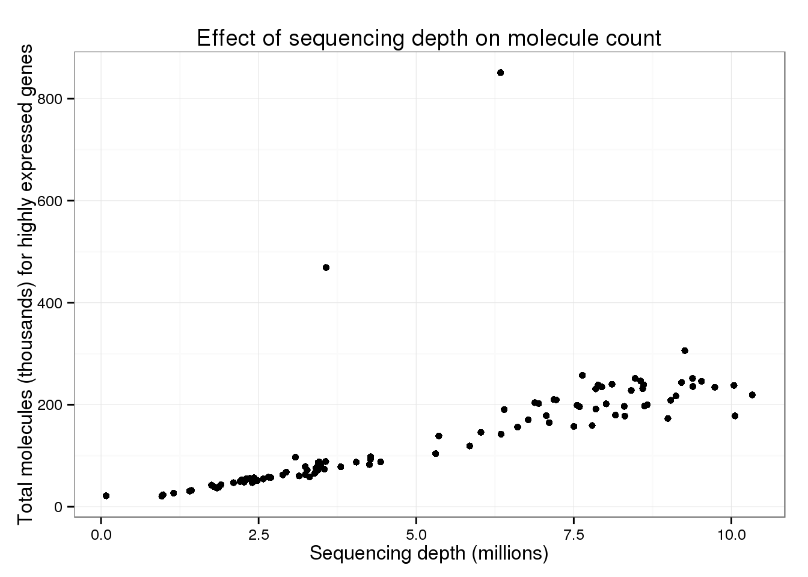
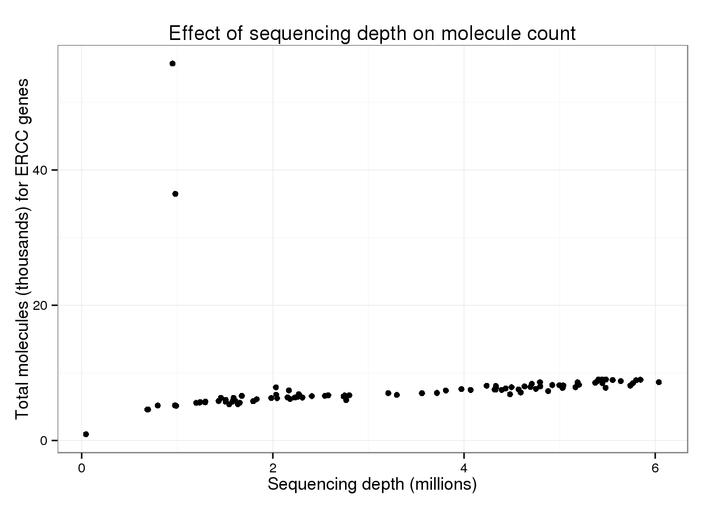
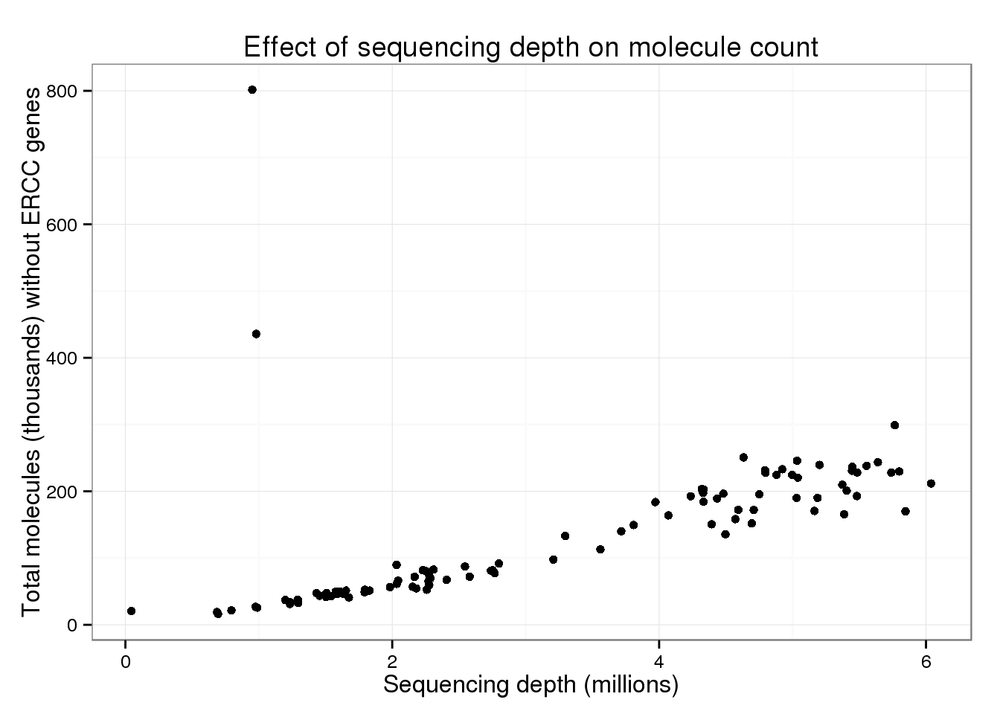

Last updated: 2015-10-01
Code version: 0a8ae478de84ce46ed5572c0b2b85e3337f3f71c
Does the sequencing depth of a given single cell affect the total number of UMIs observed in the data from Islam et al., 2014?
library("dplyr")
library("ggplot2")
theme_set(theme_bw(base_size = 12))The GEO entry for the study GSE46980 contains a tab-delimted file with the molecule counts for all the samples. The samples are labeled by their well, e.g. “A01”, and their barcode, e.g. “ATTAGAC”. I label them from ESCell_1 to ESCell_2 to correspond to the naming scheme of their fastq files. The fastq files only contain the barcode and not the well, e.g. “ESCell_1_ATTAGAC_single”. I did a few spot checks, and it appears that the order of the columns in the molecule counts file corresponds to the 1 through 96 numbering of the fastq files.
Here is the description of the file (you can see this description by clicking on any of the individual samples):
Supplementary_files_format_and_content: Tab-delimited text file containing counts of detected cDNA molecules for each transcript model in each of the 96 cells, using data from all three sequencing lanes.
islam_file <- "../data/GSE46980_CombinedMoleculeCounts.tab.gz"
if (!file.exists(islam_file)) {
download.file(url = "https://www.ncbi.nlm.nih.gov/geo/download/?acc=GSE46980&format=file&file=GSE46980%5FCombinedMoleculeCounts%2Etab%2Egz",
destfile = islam_file, method = "wget")
}
islam_data <- read.delim(islam_file, skip = 6)
islam_meta <- islam_data %>% select(Feature:ExonHits)
islam_counts <- islam_data %>% select(X:X.95)
colnames(islam_counts) <- paste0("ESCell_", 1:96)Next I needed the raw fastq files to obtain the sequencing depth. These have to be downloaded from the Sequence Read Archive (SRA). Unfortunately by design the SRA assigns samples arbitrary IDs making it very difficult to figure out which sample is what. In other words, this is not the fault of the others because this happens to all data posted to SRA. The informative names that are viewable in GEO are stripped in the SRA.
Luckily I found a strategy from this Biostars comment to obtain the mapping between each sample in GEO to the sample ID in the SRA. The samples with the label “single” each have two fastq files. The other samples labeled “amplified” were PCR-amplifed for an additional 9 cycles, and each only have one fastq file. All three fastq files were used to obtain the molecule counts (see the description above).
library("GEOquery")Loading required package: Biobase
Loading required package: BiocGenerics
Loading required package: parallel
Attaching package: 'BiocGenerics'
The following objects are masked from 'package:parallel':
clusterApply, clusterApplyLB, clusterCall, clusterEvalQ,
clusterExport, clusterMap, parApply, parCapply, parLapply,
parLapplyLB, parRapply, parSapply, parSapplyLB
The following objects are masked from 'package:dplyr':
combine, intersect, setdiff, union
The following object is masked from 'package:stats':
xtabs
The following objects are masked from 'package:base':
anyDuplicated, append, as.data.frame, as.vector, cbind,
colnames, do.call, duplicated, eval, evalq, Filter, Find, get,
intersect, is.unsorted, lapply, Map, mapply, match, mget,
order, paste, pmax, pmax.int, pmin, pmin.int, Position, rank,
rbind, Reduce, rep.int, rownames, sapply, setdiff, sort,
table, tapply, union, unique, unlist, unsplit
Welcome to Bioconductor
Vignettes contain introductory material; view with
'browseVignettes()'. To cite Bioconductor, see
'citation("Biobase")', and for packages 'citation("pkgname")'.
Setting options('download.file.method.GEOquery'='curl')gse <- getGEO("GSE46980")ftp://ftp.ncbi.nlm.nih.gov/geo/series/GSE46nnn/GSE46980/matrix/
Found 1 file(s)
GSE46980_series_matrix.txt.gz
File stored at:
/tmp/Rtmp3CJOyU/GPL13112.softgse <- as.data.frame(gse[[1]], stringsAsFactors = FALSE)
sra_info <- gse %>%
select(title, supplementary_file_1) %>%
mutate(srx = substr(supplementary_file_1, start = 77, stop = 85))
head(sra_info) title
1 ESCell_1_ATTAGAC_single
2 ESCell_2_ACGAGTC_single
3 ESCell_3_TGACGTG_single
4 ESCell_4_GTCGTTG_single
5 ESCell_5_CGCTAAA_single
6 ESCell_6_GTCTGTA_single
supplementary_file_1
1 ftp://ftp-trace.ncbi.nlm.nih.gov/sra/sra-instant/reads/ByExp/sra/SRX/SRX387/SRX387272
2 ftp://ftp-trace.ncbi.nlm.nih.gov/sra/sra-instant/reads/ByExp/sra/SRX/SRX387/SRX387273
3 ftp://ftp-trace.ncbi.nlm.nih.gov/sra/sra-instant/reads/ByExp/sra/SRX/SRX387/SRX387274
4 ftp://ftp-trace.ncbi.nlm.nih.gov/sra/sra-instant/reads/ByExp/sra/SRX/SRX387/SRX387275
5 ftp://ftp-trace.ncbi.nlm.nih.gov/sra/sra-instant/reads/ByExp/sra/SRX/SRX387/SRX387276
6 ftp://ftp-trace.ncbi.nlm.nih.gov/sra/sra-instant/reads/ByExp/sra/SRX/SRX387/SRX387277
srx
1 SRX387272
2 SRX387273
3 SRX387274
4 SRX387275
5 SRX387276
6 SRX387277The information obtained via GEO maps each sample to its SRA sample ID (SRX). To convert from SRX to the fastq files (SRR), I downloaded the meta-information from SRA. This takes a long time but only has to be done once.
library("SRAdb")Loading required package: RSQLite
Loading required package: DBI
Loading required package: graph
Loading required package: RCurl
Loading required package: bitopssqlfile <- "/mnt/gluster/home/jdblischak/SRAmetadb.sqlite"
if(!file.exists(sqlfile)) {
sqlfile <- getSRAdbFile(destdir = "/mnt/gluster/home/jdblischak/", method = "wget")
}
sra_con <- dbConnect(SQLite(), sqlfile)For each sample, I download the associated fastq files and give them a meaningful name.
# directory to save Islam et al. data
islam_dir <- "/mnt/gluster/data/internal_supp/singleCellSeq/islam"
dir.create(islam_dir, showWarnings = FALSE)
for (srx_index in 1:nrow(sra_info)) {
srr <- sraConvert(sra_info$srx[srx_index], "run", sra_con)$run
for (srr_index in 1:length(srr)) {
original_name <- sprintf("%s/%s.fastq.gz", islam_dir, srr[srr_index])
new_name <- sprintf("%s/%s_%d.fastq.gz", islam_dir, sra_info$title[srx_index], srr_index)
# cat(sprintf("%s\t%s\n", original_name, new_name))
if (!file.exists(new_name)) {
getSRAfile(srr[srr_index], sra_con, destDir = islam_dir, fileType = "fastq", method = "wget")
stopifnot(file.exists(original_name))
file.rename(original_name, new_name)
}
}
}I obtain the sequencing depth by counting the number of raw reads in each file.
islam_total_reads_file <- "../data/islam-2014-total-reads.txt"
if (!file.exists(islam_total_reads_file)) {
total_reads <- numeric(length = ncol(islam_counts))
names(total_reads) <- colnames(islam_counts)
for (cell in names(total_reads)) {
cmd <- sprintf("zcat %s/%s_* | grep '@SRR' | wc -l",
islam_dir, cell)
print(cmd)
total_reads[cell] <- as.numeric(system(cmd, intern = TRUE))
}
write.table(total_reads, file = islam_total_reads_file, quote = FALSE,
sep = "\t", col.names = FALSE)
} else {
total_reads_df <- read.table(islam_total_reads_file, stringsAsFactors = FALSE)
colnames(total_reads_df) <- c("cell", "total_reads")
total_reads <- total_reads_df$total_reads
names(total_reads) <- total_reads_df$cell
}I obtain the total molecule counts per sample by summing the columns.
total_molecules <- colSums(islam_counts)
names(total_molecules) <- colnames(islam_counts)
summary(total_molecules) Min. 1st Qu. Median Mean 3rd Qu. Max.
20850 58100 112300 143200 206300 857100 I then merge the total molecules with the total reads, confirming that the sample names are concordant.
total_molecules <- total_molecules[names(total_molecules) %in% names(total_reads)]
stopifnot(names(total_molecules) == names(total_reads),
length(total_molecules) == length(total_reads))
total_counts <- data.frame(cell = names(total_reads), total_reads, total_molecules,
stringsAsFactors = FALSE)To make the plots more easily interpretable, I scale the total number of molecules by 103 and the total number of reads by 106.
total_counts$total_reads <- total_counts$total_reads / 10^6
total_counts$total_molecules <- total_counts$total_molecules / 10^3Plotting the sequencing depth versus the total number of molecules per sample.
p_conv <- ggplot(total_counts, aes(x = total_reads, y = total_molecules)) +
geom_point() +
labs(x = "Sequencing depth (millions)",
y = "Total molecules (thousands)",
title = "Effect of sequencing depth on molecule count")
p_conv
There are two clear outliers: cells 19 and 24. I’m not sure why these two cells are so different.
p_conv + geom_text(aes(label = cell))
But focusing on the majority of cells, there is a clear increase in the total number of molecules with increasing sequencing depth.
p_conv + ylim(0, 400) + geom_smooth(method = "lm")Warning: Removed 2 rows containing missing values (stat_smooth).Warning: Removed 2 rows containing missing values (geom_point).Warning: Removed 2 rows containing missing values (geom_path).
Maybe this effect is only seen when considering all genes (since with more sequencing, you are more likely to sequence rare molecules). Below I limit the analysis to only the 10,000 most highly expressed genes.
mean_counts <- rowMeans(islam_counts)
total_counts$total_molecules_high <- colSums(islam_counts[order(mean_counts,
decreasing = TRUE)[1:10000], ])
summary(total_counts$total_molecules_high) Min. 1st Qu. Median Mean 3rd Qu. Max.
20770 57780 111600 142500 205200 851000 total_counts$total_molecules_high <- total_counts$total_molecules_high / 10^3The trend appears the same when only using the top expressed genes.
p_conv %+% total_counts %+% aes(y = total_molecules_high) +
labs(y = "Total molecules (thousands) for highly expressed genes")
Another possibility is that this difference in largely driven by the ERCC spike-in genes.
total_counts$total_molecules_ercc <- colSums(islam_counts[islam_meta$Chr == "CTRL", ]) / 10^3
total_counts$total_molecules_endo <- colSums(islam_counts[islam_meta$Chr != "CTRL", ]) / 10^3p_conv %+% total_counts %+% aes(y = total_molecules_ercc) +
labs(y = "Total molecules (thousands) for ERCC genes")
p_conv %+% total_counts %+% aes(y = total_molecules_endo) +
labs(y = "Total molecules (thousands) without ERCC genes")
But these also look similar to the overall trend.
sessionInfo()R version 3.2.0 (2015-04-16)
Platform: x86_64-unknown-linux-gnu (64-bit)
locale:
[1] LC_CTYPE=en_US.UTF-8 LC_NUMERIC=C
[3] LC_TIME=en_US.UTF-8 LC_COLLATE=en_US.UTF-8
[5] LC_MONETARY=en_US.UTF-8 LC_MESSAGES=en_US.UTF-8
[7] LC_PAPER=en_US.UTF-8 LC_NAME=C
[9] LC_ADDRESS=C LC_TELEPHONE=C
[11] LC_MEASUREMENT=en_US.UTF-8 LC_IDENTIFICATION=C
attached base packages:
[1] parallel stats graphics grDevices utils datasets methods
[8] base
other attached packages:
[1] SRAdb_1.26.0 RCurl_1.95-4.6 bitops_1.0-6
[4] graph_1.46.0 RSQLite_1.0.0 DBI_0.3.1
[7] GEOquery_2.34.0 Biobase_2.28.0 BiocGenerics_0.14.0
[10] ggplot2_1.0.1 dplyr_0.4.2 knitr_1.10.5
loaded via a namespace (and not attached):
[1] Rcpp_0.12.0 magrittr_1.5 MASS_7.3-40 munsell_0.4.2
[5] colorspace_1.2-6 R6_2.1.1 stringr_1.0.0 httr_0.6.1
[9] plyr_1.8.3 tools_3.2.0 grid_3.2.0 gtable_0.1.2
[13] htmltools_0.2.6 lazyeval_0.1.10 yaml_2.1.13 assertthat_0.1
[17] digest_0.6.8 reshape2_1.4.1 formatR_1.2 evaluate_0.7
[21] rmarkdown_0.6.1 labeling_0.3 stringi_0.4-1 scales_0.2.4
[25] stats4_3.2.0 XML_3.98-1.2 proto_0.3-10